Data Visualization II
Alice McGrath
February 27, 2025
Agenda
- Data visualization workflow
- Activity using RawGraphs
- On your own
How do you make a data viz?

Get data
- Collect it
- Find a dataset
- Clean and organize it
- Get to know the context and effects of the data collection process
Analyze data
- What types of data do you have?
- How many variables do you have? How do your variables relate to each other?
- What questions can your dataset answer? What stories can it tell?
What types of data do you have?
Numeric | categoric | geographic | temporal |relationships
How many variables do you have? How do your variables relate to each other?
quantities/distribution | correlation | part of a whole | change over time | connections
What questions can you answer?
What stories can you tell?
Design visualizations
What will you show?
- All variables? Relationships between variables?
- Summaries? Every data point?
What graph types would be most effective?
- Useful resource: From Data to Viz
- Use your imagination! Draw your visualization on paper.
Communication
- What methods can you use to highlight your variables?
- How can you make the results visually compelling and engaging?
- How can you make them more accessible?
Storytelling
- What should viewers take away from your visualization?
- What kind of contextual information is needed for them to understand it?
Data Viz with RawGraphs

Visitors to US National Parks by year, 1979-2023
Getting started
- Download the data here: National parks annual data
- Save it to a folder on your computer that you’ll be able to find later
- Upload the dataset to WTF CSV to see some basic info about it
- What types of data do we have?
V1: RawGraphs line graph
- Navigate to RawGraphs.io
- Click ‘Use it Now’
- Upload the parks dataset
- Make sure the data in each row is categorized correctly
- Scroll down to ‘Choose a Chart’ and select ‘Line Chart’
- Drag ‘Year’ onto the X axis
- Drag ‘RecreationVisits’ onto the Y axis
- Look at the result. What do you notice?
- Now drag ‘ParkName’ onto ‘Lines’
- Try dragging things onto ‘Color’ and ‘Series’ and try swapping out other categories for ‘Lines’
- When you have something you are satisfied with, scroll down to
‘export’. Choose either
.svgor.png - Save this in the same folder as your csv.
On your own
- In pairs, create 2-3 other graphs to show different things with the original dataset or a stacked dataset.
- Save 2 graphs and post them to the Moodle Forum for today
- Tips
- Use the RawGraphs documentation for more detail on particular charts.
- Create at least one graph that shows hierarchies.
- Optional: try out Park visits by month, which also includes data on camping and other categories.
V3: Draw your data
- In your pairs, draw visual representations of the National Parks data using paper and markers
- Design them however you like
- Aim to create two different versions
Discussion
- Share out your visualizations and explain your vision.
- What did you find interesting or difficult about this process?
- What context or additional data would you want to bring in if you were building a data story or data essay?